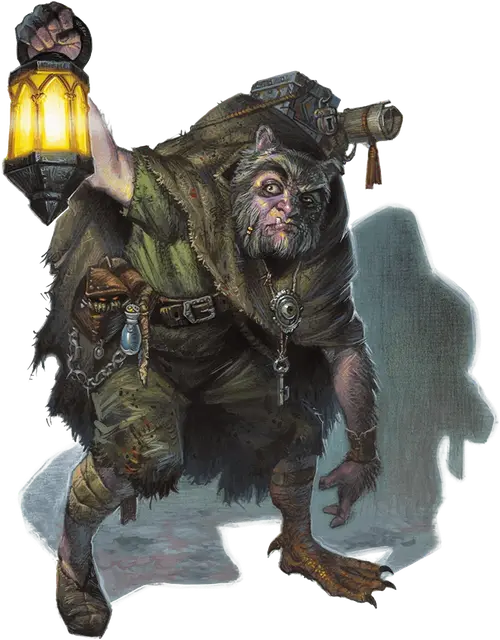

Сайрус Белвью
Cyrus Belview
Средний Гуманоид (Полукровка), любое мировоззрение, именной НИП

Класс Доспеха 11 (природный доспех)
Хиты 26 (4к8 + 8)
Скорость 20 футов
| мод | спас | ||
|---|---|---|---|
| СИЛ | 12 | +1 | +1 |
| ЛОВ | 9 | −1 | −1 |
| ТЕЛ | 15 | +2 | +2 |
| мод | спас | ||
|---|---|---|---|
| ИНТ | 9 | −1 | −1 |
| МДР | 10 | +0 | +0 |
| ХАР | 6 | −2 | −2 |
Навыки Восприятие +2, Обман +2, Скрытность +3
Чувства пассивное Восприятие 12
Языки Общий
Опасность 1/4 (50 опыта)
Бонус мастерства +2
Особенности
Острый слух и обоняние. Сайрус имеет преимущество на проверки Мудрости (Восприятие), основанные на слухе и обонянии.
Подражание. . Сайрус подражает любым звукам и голосам, который слышал раньше. Существо, услышавшее эти звуки, может понять, что это имитация, если преуспеет в проверке Мудрости (Проницательность) Сл 12.
Действия
Мультиатака. . Сайрус совершает две атаки: одну укусом и одну когтями или кинжалом.
Укус. . Рукопашная атака оружием: +3 к попаданию, досягаемость 5 футов, одна цель. Попадание: колющий урон 3 (1к4+1).
Когти. . Рукопашная атака оружием: +3 к попаданию, досягаемость 5 футов, одна цель, Попадание: рубящий урон 3 (1к4+1).
Кинжал. . Рукопашная или дальнобойная атака оружием: +3 к попаданию, досягаемость 5 футов или дистанция 20/60 футов, одна цель. Попадание: колющий урон 3 (1к4+1).
Описание
Сайрус Белвью [Cyrus Belview], полукровка [mongrelfolk] и верный слуга Страда. Он ростом 4 фута и 9 дюймов, но кажется ниже из-за сутулости. Левая половина его лица покрыта чешуйками ящера, и у него уши пантеры. Его левая нога выглядит как утиная перепончатая лапа, а на его руках клоки чёрной собачьей шерсти.